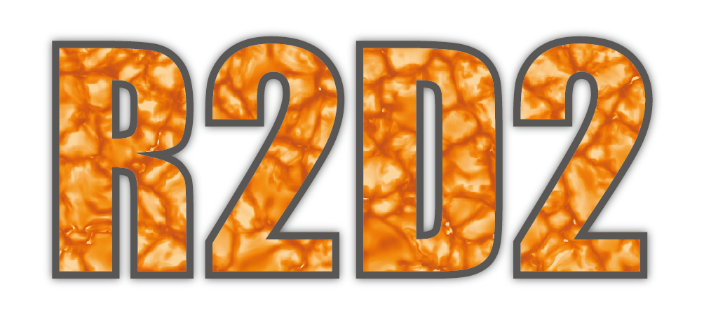

Defines uniform geometry
xmax (float) – location of upper boundary
xmin (float) – location of lower boundary
ix (int) – number of grid without margin
margin (int) – number of margin
x – generated geometry size of ix + 2*margin
numpy.ndarray, float